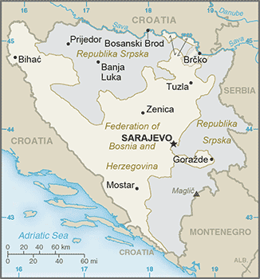
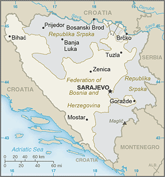

Europe :: BOSNIA AND HERZEGOVINA
Introduction :: BOSNIA AND HERZEGOVINA
-
Bosnia and Herzegovina declared sovereignty in October 1991 and independence from the former Yugoslavia on 3 March 1992 after a referendum boycotted by ethnic Serbs. The Bosnian Serbs - supported by neighboring Serbia and Montenegro - responded with armed resistance aimed at partitioning the republic along ethnic lines and joining Serb-held areas to form a "Greater Serbia." In March 1994, Bosniaks and Croats reduced the number of warring factions from three to two by signing an agreement creating a joint Bosniak-Croat Federation of Bosnia and Herzegovina. On 21 November 1995, in Dayton, Ohio, the warring parties initialed a peace agreement that ended three years of interethnic civil strife (the final agreement was signed in Paris on 14 December 1995).The Dayton Peace Accords retained Bosnia and Herzegovina's international boundaries and created a multiethnic and democratic government charged with conducting foreign, diplomatic, and fiscal policy. Also recognized was a second tier of government composed of two entities roughly equal in size: the predominantly Bosniak-Bosnian Croat Federation of Bosnia and Herzegovina and the predominantly Bosnian Serb-led Republika Srpska (RS). The Federation and RS governments are responsible for overseeing most government functions. Additionally, the Dayton Accords established the Office of the High Representative to oversee the implementation of the civilian aspects of the agreement. The Peace Implementation Council at its conference in Bonn in 1997 also gave the High Representative the authority to impose legislation and remove officials, the so-called "Bonn Powers." An original NATO-led international peacekeeping force (IFOR) of 60,000 troops assembled in 1995 was succeeded over time by a smaller, NATO-led Stabilization Force (SFOR). In 2004, European Union peacekeeping troops (EUFOR) replaced SFOR. Currently, EUFOR deploys around 600 troops in theater in a security assistance and training capacity.
Geography :: BOSNIA AND HERZEGOVINA
-
Southeastern Europe, bordering the Adriatic Sea and Croatia44 00 N, 18 00 EEuropetotal: 51,197 sq kmland: 51,187 sq kmwater: 10 sq kmcountry comparison to the world: 129slightly smaller than West Virginiatotal: 1,543 kmborder countries (3): Croatia 956 km, Montenegro 242 km, Serbia 345 km20 kmNAhot summers and cold winters; areas of high elevation have short, cool summers and long, severe winters; mild, rainy winters along coastmountains and valleysmean elevation: 500 melevation extremes: lowest point: Adriatic Sea 0 mhighest point: Maglic 2,386 mcoal, iron ore, bauxite, copper, lead, zinc, chromite, cobalt, manganese, nickel, clay, gypsum, salt, sand, timber, hydropoweragricultural land: 42.2%arable land 19.7%; permanent crops 2%; permanent pasture 20.5%forest: 42.8%other: 15% (2011 est.)30 sq km (2012)the northern and central areas of the country are the most densely populateddestructive earthquakesair pollution; deforestation and illegal logging; inadequate wastewater treatment and flood management facilities; sites for disposing of urban waste are limited; land mines left over from the 1992-95 civil strife are a hazard in some areasparty to: Air Pollution, Biodiversity, Climate Change, Climate Change-Kyoto Protocol, Desertification, Hazardous Wastes, Law of the Sea, Marine Life Conservation, Ozone Layer Protection, Wetlandssigned, but not ratified: none of the selected agreementswithin Bosnia and Herzegovina's recognized borders, the country is divided into a joint Bosniak/Croat Federation (about 51% of the territory) and the Bosnian Serb-led Republika Srpska or RS (about 49% of the territory); the region called Herzegovina is contiguous to Croatia and Montenegro, and traditionally has been settled by an ethnic Croat majority in the west and an ethnic Serb majority in the east
People and Society :: BOSNIA AND HERZEGOVINA
-
3,856,181 (July 2017 est.)country comparison to the world: 128noun: Bosnian(s), Herzegovinian(s)adjective: Bosnian, HerzegovinianBosniak 50.1%, Serb 30.8%, Croat 15.4%, other 2.7%, not declared/no answer 1%note: the methodology remains disputed and Republika Srspka authorities refuse to recognize the results; Bosniak has replaced Muslim as an ethnic term in part to avoid confusion with the religious term Muslim - an adherent of Islam (2013 est.)Bosnian (official) 52.9%, Serbian (official) 30.8%, Croatian (official) 14.6%, other 1.6%, no answer 0.2% (2013 est.)Muslim 50.7%, Orthodox 30.7%, Roman Catholic 15.2%, atheist 0.8%, agnostic 0.3%, other 1.2%, undeclared/no answer 1.1% (2013 est.)0-14 years: 13.29% (male 264,718/female 247,587)15-24 years: 11.58% (male 230,495/female 216,107)25-54 years: 45.88% (male 889,686/female 879,514)55-64 years: 14.83% (male 275,550/female 296,236)65 years and over: 14.43% (male 218,823/female 337,465) (2017 est.)total dependency ratio: 43.3youth dependency ratio: 20.7elderly dependency ratio: 22.5potential support ratio: 4.4 (2015 est.)total: 42.1 yearsmale: 40.5 yearsfemale: 43.5 years (2017 est.)country comparison to the world: 34-0.16% (2017 est.)country comparison to the world: 2098.8 births/1,000 population (2017 est.)country comparison to the world: 21110 deaths/1,000 population (2017 est.)country comparison to the world: 39-0.4 migrant(s)/1,000 population (2017 est.)country comparison to the world: 121the northern and central areas of the country are the most densely populatedurban population: 40.1% of total population (2017)rate of urbanization: 0.38% annual rate of change (2015-20 est.)SARAJEVO (capital) 318,000 (2015)at birth: 1.07 male(s)/female0-14 years: 1.07 male(s)/female15-24 years: 1.07 male(s)/female25-54 years: 1.01 male(s)/female55-64 years: 0.92 male(s)/female65 years and over: 0.64 male(s)/femaletotal population: 0.95 male(s)/female (2016 est.)27 years (2014 est.)11 deaths/100,000 live births (2015 est.)country comparison to the world: 143total: 5.5 deaths/1,000 live birthsmale: 5.6 deaths/1,000 live birthsfemale: 5.4 deaths/1,000 live births (2017 est.)country comparison to the world: 172total population: 76.9 yearsmale: 73.9 yearsfemale: 80.2 years (2017 est.)country comparison to the world: 811.3 children born/woman (2017 est.)country comparison to the world: 21745.8% (2011/12)9.6% of GDP (2014)country comparison to the world: 301.89 physicians/1,000 population (2013)3.5 beds/1,000 population (2010)improved:urban: 99.7% of populationrural: 100% of populationtotal: 99.9% of populationunimproved:urban: 0.3% of populationrural: 0% of populationtotal: 0.1% of population (2015 est.)improved:urban: 98.9% of populationrural: 92% of populationtotal: 94.8% of populationunimproved:urban: 1.1% of populationrural: 8% of populationtotal: 5.2% of population (2015 est.)NANANA17.9% (2016)country comparison to the world: 1181.5% (2012)country comparison to the world: 127NAdefinition: age 15 and over can read and writetotal population: 98.5%male: 99.5%female: 97.5% (2015 est.)total: 14 yearsmale: 14 yearsfemale: 15 years (2014)total: 62.3%male: 43.5%female: 62.3% (2015 est.)country comparison to the world: 1
Government :: BOSNIA AND HERZEGOVINA
-
conventional long form: noneconventional short form: Bosnia and Herzegovinalocal long form: nonelocal short form: Bosna i Hercegovinaformer: People's Republic of Bosnia and Herzegovina, Socialist Republic of Bosnia and Herzegovinaabbreviation: BiHetymology: the larger northern territory is named for the Bosna River; the smaller southern section takes its name from the German word "herzog," meaning "duke," and the ending "-ovina," meaning "land," forming the combination denoting "dukedom"parliamentary republicname: Sarajevogeographic coordinates: 43 52 N, 18 25 Etime difference: UTC+1 (6 hours ahead of Washington, DC, during Standard Time)daylight saving time: +1hr, begins last Sunday in March; ends last Sunday in October3 first-order administrative divisions - Brcko District (Brcko Distrikt) (ethnically mixed), the Federation of Bosnia and Herzegovina (Federacija Bosne i Hercegovine) (predominantly Bosniak-Croat), the Republic of Srpska (Republika Srpska) (predominantly Serb)1 March 1992 (from Yugoslavia); note - referendum for independence completed on 1 March 1992; independence declared on 3 March 1992Independence Day, 1 March (1992) and Statehood Day, 25 November (1943) - both observed in the Federation of Bosnia and Herzegovina entity; Victory Day, 9 May (1945) and Dayton Agreement Day, 21 November (1995) - both observed in the Republika Srpska entitynote: there is no national-level holidayhistory: 14 December 1995 (constitution included as part of the Dayton Peace Accords); note - each of the political entities has its own constitutionamendments: decided by the Parliamentary Assembly, including a two-thirds majority vote of members present in the House of Representatives; the constitutional article on human rights and fundamental freedoms cannot be amended; amended several times, last in 2009 (2016)civil law system; Constitutional Court review of legislative actshas not submitted an ICJ jurisdiction declaration; accepts ICCt jurisdictioncitizenship by birth: nocitizenship by descent only: at least one parent must be a citizen of Bosnia and Herzegovinadual citizenship recognized: yes, provided there is a bilateral agreement with the other stateresidency requirement for naturalization: 8 years18 years of age, 16 if employed; universalchief of state: Chairman of the Presidency Dragan COVIC (chairman since 17 July 2017, presidency member since 17 November 2014 - Croat), Mladen IVANIC (presidency member since 17 November 2014 - Serb); Bakir IZETBEGOVIC (presidency member since 10 November 2010 - Bosniak)head of government: Chairman of the Council of Ministers Denis ZVIZDIC (since 11 February 2015)cabinet: Council of Ministers nominated by the council chairman, approved by the state-level House of Representativeselections/appointments: 3-member presidency (1 Bosniak and 1 Croat elected from the Federation of Bosnia and Herzegovina and 1 Serb elected from the Republika Srpska) directly elected by simple majority popular vote for a 4-year term (eligible for a second term, but then ineligible for 4 years); the presidency chairpersonship rotates every 8 months and resumes where it left off following each general election; election last held on 12 October 2014 (next to be held in October 2018); the chairman of the Council of Ministers appointed by the presidency and confirmed by the state-level House of Representativeselection results: percent of vote - Mladen IVANIC (PDP) 48.7% - Serb seat; Dragan COVIC (HDZ-BiH) 52.2% - Croat seat; Bakir IZETBEGOVIC (SDA) 32.9% - Bosniak seatnote: President of the Federation of Bosnia and Herzegovina Marinko CAVARA (since 11 February 2015); Vice Presidents Melika MAHMUTBEGOVIC (since 11 February 2015), Milan DUNOVIC (since 11 February 2015); President of the Republika Srpska Milorad DODIK (since 15 November 2010); Vice Presidents Ramiz SALKIC (since 24 November 2014), Josip JERKOVIC (since 24 November 2014)description: bicameral Parliamentary Assembly or Skupstina consists of the House of Peoples or Dom Naroda (15 seats - 5 Bosniak, 5 Croat, 5 Serb; members designated by the Federation of Bosnia and Herzegovina's House of Peoples and the Republika Srpska's National Assembly to serve 4-year terms) and the state-level House of Representatives or Predstavnicki Dom (42 seats to include 28 seats allocated to the Federation of Bosnia and Herzegovina and 14 to the Republika Srpska; members directly elected by proportional representation vote to serve 4-year terms); note - the Federation of Bosnia and Herzegovina has a bicameral legislature that consists of the House of Peoples (58 seats - 17 Bosniak, 17 Croat, 17 Serb, 7 other) and the House of Representatives (98 seats; members directly elected by proportional representation vote to serve 4-year terms); Republika Srpska's unicameral legislature is the National Assembly (83 directly elected delegates serve 4-year terms)elections: House of Peoples - last constituted in 11 February 2015 (next likely to be constituted in 2019); state-level House of Representatives - election last held on 12 October 2014 (next to be held in October 2018)election results: House of Peoples - percent of vote by party/coalition - NA; seats by party/coalition - NA; state-level House of Representatives - percent of vote by party/coalition - Federation votes: SDA 27.9%, DF 15.3%, SBB BiH 14.4%, Croat People's Assembly coalition or HNS (HDZ BiH-HSS-NHI-HKDU-HSP BiH-HSP HB) 12.2%, SDP 9.5%, HDZ-1990 4.1%, BPS-Sefer Halilovic 3.7%, A-SDA 2.3%, other 10.6%; Republika Srpska votes: SNSD 38.5%, SDS 32.6%, PDP-NDP 7.8%, DNS 5.7%, SDA 4.9%, other 10.5%; seats by party/coalition - SDA 10, SNSD 6, SDS 5, DF 5, SBB BiH 4, Croat People's Assembly coalition or HNS (HDZ BiH-HSS-NHI-HKDU-HSP BiH-HSP HB) 4, SDP 3, PDP-NDP 1, HDZ-1990 1, BPS-Sefer Halilovic 1, DNS 1, A-SDA 1highest court(s): Bosnia and Herzegovina (BiH) Constitutional Court (consists of 9 members); Court of BiH (consists of 44 national judges and 7 international judges organized into 3 divisions - Administrative, Appellate, and Criminal, which includes a War Crimes Chamber)judge selection and term of office: BiH Constitutional Court judges - 4 selected by the Federation of Bosnia and Herzegovina House of Representatives, 2 selected by the Republika Srpska's National Assembly, and 3 non-Bosnian judges selected by the president of the European Court of Human Rights; Court of BiH president and national judges appointed by the High Judicial and Prosecutorial Council; Court of BiH president appointed for renewable 6-year term; other national judges appointed to serve until age 70; international judges recommended by the president of the Court of BiH and appointed by the High Representative for Bosnia and Herzegovina; international judges appointed to serve until age 70subordinate courts: the Federation has 10 cantonal courts plus a number of municipal courts; the Republika Srpska has a supreme court, 5 district courts, and a number of municipal courtsAlliance for a Better Future of BiH or SBB BiH [Fahrudin RADONCIC]Alliance of Independent Social Democrats or SNSD [Milorad DODIK]Alternative Party for Democratic Activity or A-SDA [Nermin OGRESEVIC]Bosnian-Herzegovinian Patriotic Party-Sefer Halilovic or BPS-Sefer Halilovic [Sefer HALILOVIC]Croat Peasants' Party or HSS [Mario KARAMATIC]Croatian Christian Democratic Union of Bosnia and Herzegovina or HKDU [Ivan MUSA]Croatian Democratic Union of Bosnia and Herzegovina or HDZ-BiH [Dragan COVIC]Croatian Democratic Union 1990 or HDZ-1990 [Ilija CVITANOVIC]Croatian Party of Rights or HSP BiH [Stanko PRIMORAC]Croatian Party of Rights of Herceg-Bosne or HSP HB [Vesna PINJUH]Croatian People's Party-Liberal Democrats or HNS [Ivan VRDOLJAK]Democratic Front of DF [Zeljko KOMSIC]Democratic Peoples' Alliance or DNS [Marko PAVIC]Party for Democratic Action or SDA [Bakir IZETBEGOVIC]Party of Democratic Progress or PDP [Branislav BORENOVIC]People's Democratic Movement or NDP [Dragan CAVIC]Serb Democratic Party or SDS [Vukota GOVEDARICA]Social Democratic Party or SDP [Nermin NIKSIC]war veterans; displaced persons associations; family associations of missing persons; private mediaBIS, CD, CE, CEI, EAPC, EBRD, FAO, G-77, IAEA, IBRD, ICAO, ICC (NGOs), ICCt, ICRM, IDA, IFAD, IFC, IFRCS, ILO, IMF, IMO, IMSO, Interpol, IOC, IOM, IPU, ISO, ITSO, ITU, ITUC (NGOs), MIGA, MINUSMA, MONUSCO, NAM (observer), OAS (observer), OIC (observer), OIF (observer), OPCW, OSCE, PFP, SELEC, UN, UNCTAD, UNESCO, UNIDO, UNWTO, UPU, WCO, WHO, WIPO, WMO, WTO (observer)chief of mission: Ambassador Haris HRLE (since 23 October 2015)chancery: 2109 E Street NW, Washington, DC 20037telephone: [1] (202) 337-1500FAX: [1] (202) 337-1502consulate(s) general: Chicago, New Yorkchief of mission: Ambassador Maureen CORMACK (since 16 January 2015)embassy: 1 Robert C. Frasure Street, 71000 Sarajevomailing address: use embassy street addresstelephone: [387] (33) 704-000FAX: [387] (33) 659-722branch office(s): Banja Luka, Mostara wide blue vertical band on the fly side with a yellow isosceles triangle abutting the band and the top of the flag; the remainder of the flag is blue with seven full five-pointed white stars and two half stars top and bottom along the hypotenuse of the triangle; the triangle approximates the shape of the country and its three points stand for the constituent peoples - Bosniaks, Croats, and Serbs; the stars represent Europe and are meant to be continuous (thus the half stars at top and bottom); the colors (white, blue, and yellow) are often associated with neutrality and peace, and traditionally are linked with Bosnianote: one of several flags where a prominent component of the design reflects the shape of the country; other such flags are those of Brazil, Eritrea, and Vanuatugolden lily; national colors: blue, yellow, whitename: "Drzavna himna Bosne i Hercegovine" (The National Anthem of Bosnia and Herzegovina)lyrics/music: none officially; Dusan SESTIC and Benjamin ISOVIC/Dusan SESTICnote: music adopted 1999; lyrics accepted 2009 but not yet approved
Economy :: BOSNIA AND HERZEGOVINA
-
Bosnia and Herzegovina has a transitional economy with limited market reforms. The economy relies heavily on the export of metals, energy, textiles, and furniture as well as on remittances and foreign aid. A highly decentralized government hampers economic policy coordination and reform, while excessive bureaucracy and a segmented market discourage foreign investment. Foreign banks, primarily from Austria and Italy, control much of the banking sector, though the largest bank in the Republika Srpska entity is a private domestic one. The konvertibilna marka (convertible mark) - the national currency introduced in 1998 - is pegged to the euro through a currency board arrangement, which has maintained confidence in the currency and has facilitated reliable trade links with European partners. In 2016, Bosnia began a three-year IMF loan program that requires Bosnia to meet economic reform benchmarks to receive future funding installments.Interethnic warfare in Bosnia and Herzegovina caused production to plummet by 80% from 1992 to 1995 and unemployment to soar, but the economy made progress until 2008, when the global economic crisis caused a downturn. Since 2013, Bosnia and Herzegovina has posted positive economic growth, though severe flooding hampered recovery in 2014. Bosnia and Herzegovina became a full member of the Central European Free Trade Agreement in September 2007.Bosnia and Herzegovina's private sector is growing slowly, but foreign investment has dropped sharply since 2007. High unemployment remains the most serious macroeconomic problem. Successful implementation of a value-added tax in 2006 provided a steady source of revenue for the government and helped rein in gray-market activity, though public perceptions of government corruption and misuse of taxpayer money has encouraged a large informal economy to persist. National-level statistics have improved over time, but a large share of economic activity remains unofficial and unrecorded.Bosnia and Herzegovina's top economic priorities are: acceleration of integration into the EU; strengthening the fiscal system; public administration reform; World Trade Organization membership; and securing economic growth by fostering a dynamic, competitive private sector.$42.04 billion (2016 est.)$40.71 billion (2015 est.)$39.09 billion (2014 est.)note: data are in 2016 dollarscountry comparison to the world: 113$16.57 billion (2016 est.)2% (2016 est.)3% (2015 est.)1.1% (2014 est.)country comparison to the world: 113$10,900 (2016 est.)$10,700 (2015 est.)$10,300 (2014 est.)note: data are in 2016 dollarscountry comparison to the world: 13611.9% of GDP (2016 est.)10.5% of GDP (2015 est.)10.4% of GDP (2014 est.)country comparison to the world: 131household consumption: 78.6%government consumption: 20%investment in fixed capital: 16.9%investment in inventories: 2.1%exports of goods and services: 34.6%imports of goods and services: -52.1% (2016 est.)agriculture: 7.8%industry: 26.8%services: 65.4% (2016 est.)wheat, corn, fruits, vegetables; livestocksteel, coal, iron ore, lead, zinc, manganese, bauxite, aluminum, motor vehicle assembly, textiles, tobacco products, wooden furniture, ammunition, domestic appliances, oil refining4.4% (2016 est.)country comparison to the world: 551.401 million (2016 est.)country comparison to the world: 133agriculture: 19%industry: 30%services: 51% (2013)25.4% (2016 est.)43.2% (2015 est.)note: official rate; actual rate is lower as many technically unemployed persons work in the gray economycountry comparison to the world: 21217.2% (2011 est.)lowest 10%: 2.7%highest 10%: 27.3% (2007)36.2 (2007)country comparison to the world: 88revenues: $7.329 billionexpenditures: $7.464 billion (2016 est.)44.1% of GDP (2016 est.)country comparison to the world: 25-0.8% of GDP (2016 est.)country comparison to the world: 6344.2% of GDP (2016 est.)44.7% of GDP (2015 est.)note: data cover general government debt, and includes debt instruments issued (or owned) by government entities other than the treasury; the data include treasury debt held by foreign entities; the data include debt issued by subnational entities, as well as intra-governmental debt; intra-governmental debt consists of treasury borrowings from surpluses in the social funds, such as for retirement, medical care, and unemployment; debt instruments for the social funds are not sold at public auctions.country comparison to the world: 118calendar year-1.1% (2016 est.)-1% (2015 est.)country comparison to the world: 115.24% (31 December 2016 est.)5.79% (31 December 2015 est.)country comparison to the world: 140$5.013 billion (31 December 2016 est.)$4.554 billion (31 December 2015 est.)country comparison to the world: 101$10.89 billion (31 December 2016 est.)$10.38 billion (31 December 2015 est.)country comparison to the world: 104$9.271 billion (31 December 2016 est.)$9.389 billion (31 December 2015 est.)country comparison to the world: 109$NA$-741 million (2016 est.)$-892.4 million (2015 est.)country comparison to the world: 112$4.288 billion (2016 est.)$3.95 billion (2015 est.)country comparison to the world: 110metals, clothing, wood productsGermany 16.6%, Italy 12.7%, Croatia 11%, Serbia 9.2%, Slovenia 9.1%, Austria 8.2%, Turkey 4.5% (2016)$8.361 billion (2016 est.)$8.155 billion (2015 est.)country comparison to the world: 104machinery and equipment, chemicals, fuels, foodstuffsGermany 12.3%, Italy 11.7%, Serbia 11.2%, Croatia 9.9%, China 6.8%, Slovenia 5%, Russia 4.4%, Turkey 4.3% (2016)$5.137 billion (31 December 2016 est.)$4.791 billion (31 December 2015 est.)country comparison to the world: 91$10.64 billion (31 December 2016 est.)$12.89 billion (31 December 2015 est.)country comparison to the world: 109$7.92 billion (2014 est.)$7.721 billion (2013 est.)country comparison to the world: 97$0 (2014)country comparison to the world: 112konvertibilna markas (BAM) per US dollar -1.7674 (2016 est.)1.7674 (2015 est.)1.7626 (2014 est.)1.4718 (2013 est.)1.52 (2012 est.)
Energy :: BOSNIA AND HERZEGOVINA
-
electrification - total population: 100% (2016)14.97 billion kWh (2015 est.)country comparison to the world: 8711.44 billion kWh (2015 est.)country comparison to the world: 896.007 billion kWh (2015 est.)country comparison to the world: 323.872 billion kWh (2015 est.)country comparison to the world: 474.243 million kW (2015 est.)country comparison to the world: 8541.6% of total installed capacity (2015 est.)country comparison to the world: 1680% of total installed capacity (2015 est.)country comparison to the world: 5248.3% of total installed capacity (2015 est.)country comparison to the world: 420.3% of total installed capacity (2015 est.)country comparison to the world: 1560 bbl/day (2016 est.)country comparison to the world: 1120 bbl/day (2014 est.)country comparison to the world: 9618,940 bbl/day (2014 est.)country comparison to the world: 650 bbl (1 January 2017 es)country comparison to the world: 11220,700 bbl/day (2014 est.)country comparison to the world: 9031,000 bbl/day (2015 est.)country comparison to the world: 1205,910 bbl/day (2014 est.)country comparison to the world: 9315,700 bbl/day (2014 est.)country comparison to the world: 1290 cu m (2014 est.)country comparison to the world: 111881 million cu m (2015 est.)country comparison to the world: 1020 cu m (2014 est.)country comparison to the world: 71200 million cu m (2015 est.)country comparison to the world: 720 cu m (1 January 2014 es)country comparison to the world: 11817 million Mt (2013 est.)country comparison to the world: 87
Communications :: BOSNIA AND HERZEGOVINA
-
total subscriptions: 744,991subscriptions per 100 inhabitants: 19 (July 2016 est.)country comparison to the world: 84total: 3,404,043subscriptions per 100 inhabitants: 88 (July 2016 est.)country comparison to the world: 129general assessment: post-war reconstruction of the telecommunications network, aided by an internationally sponsored program, resulted in sharp increases in fixed-line telephone availabilitydomestic: fixed-line teledensity roughly 20 per 100 persons; mobile-cellular subscribership has been increasing rapidly and stands at roughly 90 telephones per 100 personsinternational: country code - 387; no satellite earth stations (2016)3 public TV broadcasters: Radio and TV of Bosnia and Herzegovina, Federation TV (operating 2 networks), and Republika Srpska Radio-TV; a local commercial network of 5 TV stations; 3 private, near-national TV stations and dozens of small independent TV broadcasting stations; 3 large public radio broadcasters and many private radio stations (2010).batotal: 2,677,502percent of population: 69.3% (July 2016 est.)country comparison to the world: 89
Transportation :: BOSNIA AND HERZEGOVINA
-
number of registered air carriers: 1inventory of registered aircraft operated by air carriers: 1annual passenger traffic on registered air carriers: 7,070annual freight traffic on registered air carriers: 87 mt-km (2015)T9 (2016)24 (2013)country comparison to the world: 130total: 72,438 to 3,047 m: 41,524 to 2,437 m: 1under 914 m: 2 (2017)total: 171,524 to 2,437 m: 1914 to 1,523 m: 5under 914 m: 11 (2013)6 (2013)gas 147 km; oil 9 km (2013)total: 965 kmstandard gauge: 965 km 1.435-m gauge (565 km electrified) (2014)country comparison to the world: 91total: 22,926 kmpaved: 19,426 km (4,652 km of interurban roads)unpaved: 3,500 km (2010)country comparison to the world: 102(Sava River on northern border; open to shipping but use limited) (2011)river port(s): Bosanska Gradiska, Bosanski Brod, Bosanski Samac, Brcko, Orasje (Sava River)
Military and Security :: BOSNIA AND HERZEGOVINA
-
0.99% of GDP (2016)1% of GDP (2015)1.03% of GDP (2014)1.09% of GDP (2013)1.15% of GDP (2012)country comparison to the world: 75Armed Forces of Bosnia and Herzegovina (Oruzanih Snaga Bosne i Hercegovine, OSBiH): Army of Bosnia and Herzegovina, Air Force and Air Defense (Brigada Zracnih Snaga i Protuzracne Odbrane, br ZSiPZO), Tactical Support Brigade (Brigada Takticke Podrske, br TP) (2015)18 years of age for voluntary military service; mandatory retirement at age 35 or after 15 years of service for E-1 through E-4, mandatory retirement at age 50 and 30 years of service for E-5 through E-9, mandatory retirement at age 55 and 30 years of service for all officers (2014)
Transnational Issues :: BOSNIA AND HERZEGOVINA
-
Serbia delimited about half of the boundary with Bosnia and Herzegovina, but sections along the Drina River remain in disputerefugees (country of origin): 5,164 (Croatia) (2016)IDPs: 98,000 (Bosnian Croats, Serbs, and Bosniaks displaced by inter-ethnic violence, human rights violations, and armed conflict during the 1992-95 war) (2016)stateless persons: 49 (2016)increasingly a transit point for heroin being trafficked to Western Europe; minor transit point for marijuana; remains highly vulnerable to money-laundering activity given a primarily cash-based and unregulated economy, weak law enforcement, and instances of corruption